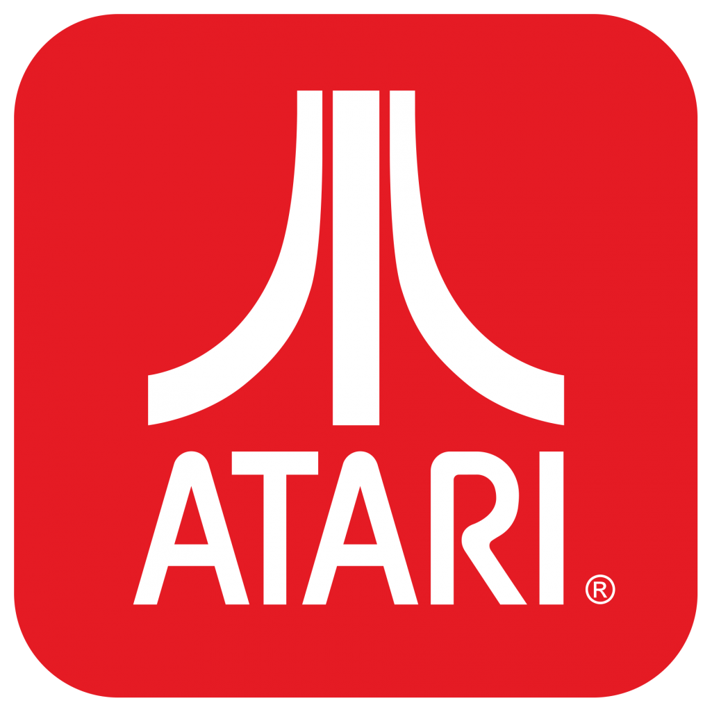

Demo Games
Escolha um cartucho e reviva seis clássicos que marcaram a era do Atari 2600 — refeitos do zero em JavaScript, direto no navegador.
Controles:
P ou Esc pausa · M liga/desliga o som · Enter inicia

Escolha um cartucho e reviva seis clássicos que marcaram a era do Atari 2600 — refeitos do zero em JavaScript, direto no navegador.
Controles:
P ou Esc pausa · M liga/desliga o som · Enter inicia